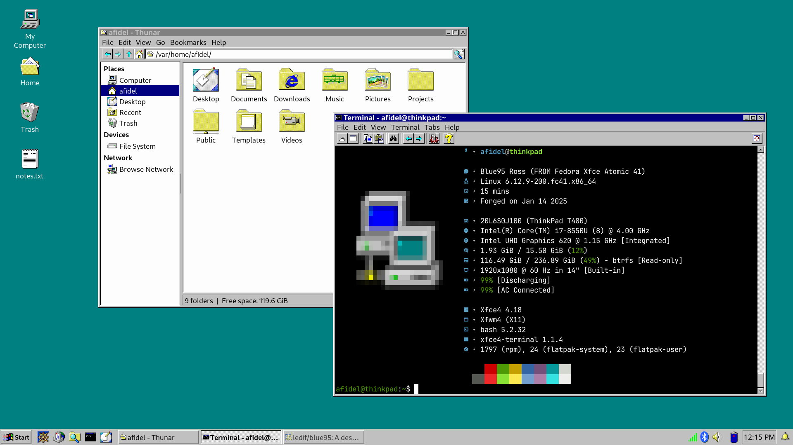

A modern and lightweight desktop experience that is reminiscent of a bygone era of computing.
Blue95 is an operating system based on Fedora Atomic Xfce. See Documentation for more details.
Follow the Install Guide for information about installing Blue95.